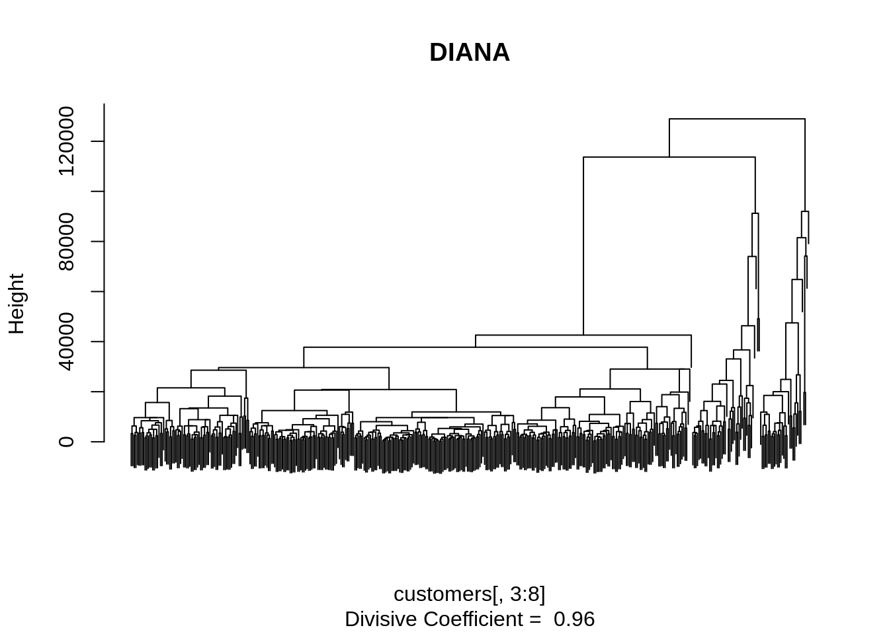

En esta sección analizaremos los algoritmos diana y mona. Recordemos que diana y mona son funciones del paquete.
Utilizaremos el dataset customers, el cual contiene datos de clientes caracterizados por 6 variables continuas y 2 variables categóricas.
library(datasetsICR)
data("customers")
names(customers)## [1] "Channel" "Region" "Fresh" "Milk"
## [5] "Grocery" "Frozen" "Detergents_Paper" "Delicassen"Para el análisis de cluster solo utilizaremos las variables continuas, las categoricas se utilizarán al final para la interpretación de los clusters.
Recordemos que DIANA parte como 1 cluster con \(n\) variables, luego separa como nuevo cluster a la variable con la media mas grande.
apply(customers[ , 3:8] , 2 , mean )## Fresh Milk Grocery Frozen
## 12000.298 5796.266 7951.277 3071.932
## Detergents_Paper Delicassen
## 2881.493 1524.870En este caso la variable Fresh será el nuevo cluster. Utilizemos el algoritmo
library(cluster)
res.diana <- diana( x = customers[ , 3:8], diss = FALSE )Observación: La clase del objeto res.diana es diana, la cual es una clase inherente de la clase twins, por lo que se comporta como agnes.
plot(res.diana , main = "DIANA" , labels = FALSE , which.plots= 2)
Desde el dendrograma podemos ver 3 o 4 clusters. Probemos con \(k=3\)
cluster.diana <- cutree(res.diana, k = 3)
table(cluster.diana)## cluster.diana
## 1 2 3
## 364 44 32mean.cluster <- t(sapply(X=1:3, FUN = function(nc) apply(customers[cluster.diana == nc,3:8],2, mean)))
rownames(mean.cluster) <- paste("Clus.", 1:3)
round(mean.cluster, 2)## Fresh Milk Grocery Frozen Detergents_Paper Delicassen
## Clus. 1 9779.56 4108.77 5525.34 2721.40 1740.50 1235.02
## Clus. 2 6329.89 17463.43 27204.80 1662.14 12626.20 2116.95
## Clus. 3 45058.03 8949.22 9072.69 8997.69 2461.28 4007.84El Clúster 1 tiene el mayor tamaño e identifica a los clientes caracterizados por un perfil promedio de gasto. De hecho, los valores promedio del cluster 1 están muy cerca del promedio general. La peculiaridad de los clientes asignados al Grupo 2 es el gasto anual extremadamente alto para un subconjunto de tipos de productos como Detergentes, leche y abarrotes. Finalmente, el Cluster 3 incluye clientes con un gasto anual uniformemente alto para todos los tipos de bienes (mas altos que el promedio).
Con las variables categóricas podemos calcular el test de hipótesis.
table(cluster.diana , customers$Channel)##
## cluster.diana 1 2
## 1 270 94
## 2 0 44
## 3 28 4chisq.test(cluster.diana , customers$Channel)$p.value## [1] 1.593597e-23chisq.test(cluster.diana , customers$Region)$p.value## [1] 0.2942478Los valores son cercanos a 0 por lo que rechazamos la hipotesis nula. Es decir los clusters no son independientes de las variables channel y religion.
Ahora utilizaremos el dataset houseVotes del paquete fclust. Este dataset contiene datos de votaciones a congresitas de Estados Unidos en 1984. Este dataframe contiene 16 variables cualitativos y 1 variable de clasificación.
library(fclust)
data("houseVotes")
names(houseVotes)## [1] "class"
## [2] "handicapped-infants"
## [3] "water-project-cost-sharing"
## [4] "adoption-of-the-budget-resolution"
## [5] "physician-fee-freeze"
## [6] "el-salvador-aid"
## [7] "religious-groups-in-schools"
## [8] "anti-satellite-test-ban"
## [9] "aid-to-nicaraguan-contras"
## [10] "mx-missile"
## [11] "immigration"
## [12] "synfuels-corporation-cutback"
## [13] "education-spending"
## [14] "superfund-right-to-sue"
## [15] "crime"
## [16] "duty-free-exports"
## [17] "export-administration-act-south-africa"level.drop <- droplevels(houseVotes, exclude="yn")
houseVotesComplete <- level.drop[complete.cases(level.drop),]
X.houseVotesComplete<- houseVotesComplete[,-1]res.mona <- mona(x = X.houseVotesComplete)La función mona retorna de forma engorrosa, por lo que podemos utilizar la siguiente función para obtener los datos de interes
cluster.mona <- function(mona.obj, n.spl){
indices <- c()
results.vector<- c()
for(i in 1:n.spl){
indices <- append(indices, which(mona.obj$step == i))
}
sorted.indices <- sort(indices)
sorted.indices <- append(sorted.indices, length(mona.obj$order))
low <- 1
for (j in 1:2^n.spl){
high <- sorted.indices[j]
cluster.size <- length(mona.obj$order[low:high])
results.vector<- append(results.vector,rep(j,cluster.size))
print(paste ("Cluster = " , j , " ,count = ",cluster.size ) )
low <- high +1
}
df <- data.frame(order = mona.obj$order, results.vector = results.vector )
df <- df[order(df$order),]
return(df$results.vector)
}clus.mona <- cluster.mona(res.mona,1)## [1] "Cluster = 1 ,count = 128"
## [1] "Cluster = 2 ,count = 104"table(clus.mona , houseVotesComplete$class)##
## clus.mona democrat republican
## 1 25 103
## 2 99 5library(mclust)## Package 'mclust' version 5.4.7
## Type 'citation("mclust")' for citing this R package in publications.adjustedRandIndex(clus.mona,
houseVotesComplete$class)## [1] 0.5476924Notemos que la partición obtenida por MONA no es muy buena. En este caso sería mejor probar con un algoritmo aglomerativo con \(k=2\) y comparar.